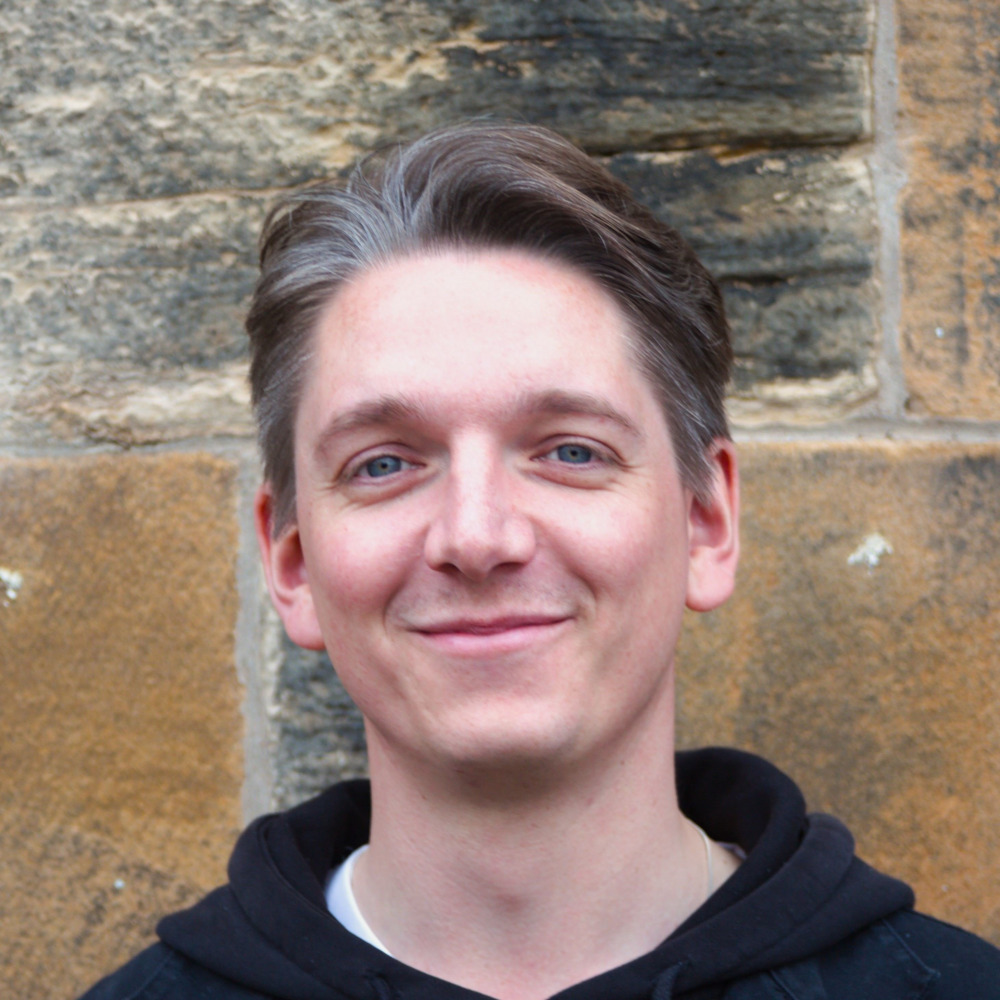

Tom Mitcham
Research Fellow in Earth System Modelling
Met Office, Exeter
National Centre for Atmospheric Science (NCAS), University of Leeds

About
I am a postdoctoral research fellow in Earth System Modelling, based at the Met Office in Exeter, affiliated with the National Centre for Atmospheric Science (NCAS) at the University of Leeds, and a member of the UK's Earth System Model (UKESM) core development team. My current research is focussed on developing a new, hybrid-resolution version of UKESM, and applying it to study interactions between the North Atlantic subpolar gyre and the Greenland Ice Sheet, and the potential for abrupt change as part of the ARIA-funded PROMOTE project.
Previously, I was a member of the Centre for Polar Observation and Modelling (CPOM) and the Bristol Glaciology Centre, contributing to the UK's national capability in ice sheet modelling and to the UKESM's TerraFIRMA project, exploring the potential for rapid changes and tipping points in the dynamics of the Earth's ice sheets. I also taught on a range of undergraduate and master's units in the School of Geographical Sciences, University of Bristol, covering topics such as glaciology, climate change and risk, statistics and scientific programming.
Prior to that, I was a postdoctoral research fellow at Northumbria University, working on the NSFGEO-NERC joint-funded project "A new mechanistic framework for modelling rift processes in Antarctic ice shelves", implementing new techniques for representing brittle ice fracture processes in continuum models.
My background is in physics, which I studied at the University of Manchester. I then undertook a PhD at the University of Bristol, supervised by Professor Jonathan Bamber and Professor Hilmar Gudmundsson. My doctoral research examined the role that ice shelves play in controlling the dynamics of the Antarctic Ice Sheet, with a particular focus on the Larsen C Ice Shelf.
Research Interests
My primary research interests are in the dynamics of glaciers and ice sheets, and interactions between these components of the cryosphere and the wider Earth system.
- Ice sheet dynamics — including ice shelf buttressing, calving and fracture, subglacial hydrology, and numerical modelling of these processes
- Earth system modelling — ice-ocean-atmosphere interactions and feedbacks
- Impacts — sea-level rise projections, ice sheet instabilities, and the consequences of ice sheet change for other Earth system components
Publications
Journal Articles
-
Earth System Dynamics, 2026, 17, 475–493We have conducted an ensemble of idealised climate overshoot simulations in a state-of-the-art Earth System Model in which global mean temperature is increased at a constant rate to global warming levels (GWLs) from 1.5 to 5 °C by prescribing constant CO2 emissions, followed by a 50 year period of zero CO2 emissions started at different GWLs, and then a period of cooling in which CO2 is removed from the atmosphere. We give an overview of the ice sheet, sea-ice and sea level responses in these simulations highlighting long term responses at different GWLs and discuss the degree to which those responses can be simply reversed as global surface temperature cools. We show a broad divide between the two hemispheres, in which Northern Hemisphere polar processes have larger direct responses to warming which are more simply reversible than those in the Southern Hemisphere. Cessation of CO2 emissions at most GWLs stabilises surface temperatures at high northern latitudes, although a slow warming trend continues at high southern latitudes. Northern Hemisphere sea-ice extent and Greenland surface mass balance both stabilise under zero CO2 emissions and appear to return toward preindustrial levels along with surface temperatures when CO2 is sequestered, but Southern Hemisphere sea-ice continues to decline under zero emissions and does not simply increase again as global temperatures cool. Likewise, the Antarctic circumpolar westerlies exhibit strengthening and shift poleward under global warming, but do not simply return to their preindustrial state when the climate is cooled, with implications for ocean circulation and Antarctic surface mass balance. The thermosteric contributions to global mean sea level from ocean heat uptake and the Greenland ice sheet continue when CO2 emissions are ceased or reversed, at rates which slowly decline on centennial timescales. The net mass balance of Antarctica and its contribution to sea level do not simply scale with global temperature; they result from a complex interaction between the basal and surface mass balances, the ice-dynamic response to those forcings and significant trends inherent to the initialisation of our ice sheet model state.@Article{esd-17-475-2026, AUTHOR = {Smith, R. S. and Bilge, T. A. and Bracegirdle, T. J. and Holland, P. R. and Kuhlbrodt, T. and Lang, C. and Liddicoat, S. and Mitcham, T. and Mulcahy, J. and Naughten, K. A. and Orr, A. and Palmieri, J. and Payne, A. J. and Rumbold, S. and Stringer, M. and Swaminathan, R. and Taylor, S. and Walton, J. and Jones, C.}, TITLE = {Response of ice sheets, sea-ice and sea level in climate stabilisation and reversibility simulations using a state-of-the-art Earth System Model}, JOURNAL = {Earth System Dynamics}, VOLUME = {17}, YEAR = {2026}, NUMBER = {3}, PAGES = {475--493}, URL = {https://esd.copernicus.org/articles/17/475/2026/}, DOI = {10.5194/esd-17-475-2026} }
-
Journal of Glaciology, 2022, 68(271), 1038–1040@article{mitcham2022validity, author = {Mitcham, Tom and Gudmundsson, G. Hilmar}, title = {On the validity of the stress-flow angle as a metric for ice-shelf stability}, journal = {Journal of Glaciology}, year = {2022}, volume = {68}, number = {271}, pages = {1038--1040}, doi = {10.1017/jog.2022.25} }
-
The Cryosphere, 2022, 16, 883–901The Antarctic Peninsula has seen rapid and widespread changes in the extent of its ice shelves in recent decades, including the collapse of the Larsen A and B ice shelves in 1995 and 2002, respectively. In 2017 the Larsen C Ice Shelf (LCIS) lost around 10 % of its area by calving one of the largest icebergs ever recorded (A68). This has raised questions about the structural integrity of the shelf and the impact of any changes in its extent on the flow of its tributary glaciers. In this work, we used an ice flow model to study the instantaneous impact of changes in the thickness and extent of the LCIS on ice dynamics and in particular on changes in the grounding line flux (GLF). We initialised the model to a pre-A68 calving state and first replicated the calving of the A68 iceberg. We found that there was a limited instantaneous impact on upstream flow – with speeds increasing by less than 10 % across almost all of the shelf – and a 0.28 % increase in GLF. This result is supported by observations of ice velocity made before and after the calving event. We then perturbed the ice-shelf geometry through a series of instantaneous, idealised calving and thinning experiments of increasing magnitude. We found that significant changes to the geometry of the ice shelf, through both calving and thinning, resulted in limited instantaneous changes in GLF. For example, to produce a doubling of GLF from calving, the new calving front needed to be moved to 5 km from the grounding line, removing almost the entire ice shelf. For thinning, over 200 m of the ice-shelf thickness had to be removed across the whole shelf to produce a doubling of GLF. Calculating the instantaneous increase in GLF (607 %) after removing the entire ice shelf allowed us to quantify the total amount of buttressing provided by the LCIS. From this, we identified that the region of the ice shelf in the first 5 km downstream of the grounding line provided over 80 % of the buttressing capacity of the shelf. This is due to the large resistive stresses generated in the narrow, local embayments downstream of the largest tributary glaciers.@article{mitcham2022instantaneous, author = {Mitcham, Tom and Gudmundsson, G. Hilmar and Bamber, Jonathan L.}, title = {The instantaneous impact of calving and thinning on the {Larsen C Ice Shelf}}, journal = {The Cryosphere}, year = {2022}, volume = {16}, pages = {883--901}, doi = {10.5194/tc-16-883-2022} }
Thesis
-
PhD thesis, University of Bristol, 2022Supervised by Jonathan L. Bamber and G. Hilmar GudmundssonIce shelves can control ice discharge from the Antarctic Ice Sheet (AIS) by providing resistive forces to their tributary glaciers – a process known as ice-shelf buttressing. The loss of buttressing through ice-shelf thinning or collapse is driving the present, observed mass loss from the AIS and its associated contribution to global sea level rise. The aim of this thesis is to better understand the buttressing capacity of ice shelves, and where within ice shelves that buttressing is generated. The Larsen C Ice Shelf (LCIS) is a particular focus as its future viability has been called into question following the collapse of its neighbouring ice shelves. The first research chapter uses an ice flow model to calculate the total buttressing provided by the LCIS. It is found that the majority of the buttressing is generated in the first few kilometres of the ice shelf downstream of the grounding line. In the second research chapter, transient model experiments demonstrate that LCIS grounding line dynamics and mass loss are most sensitive to the calving of ice close to the grounding line, and that the loss of the Bawden and Gipps Ice Rises would have a very limited, direct impact on the grounded tributary glaciers. The third research chapter uses Antarctic-wide modelling experiments to reveal that the total buttressing capacity of Antarctic ice shelves varies by two orders of magnitude. It is also found that the distribution of the buttressing within an ice shelf is controlled by the ice-shelf geometry, and that a greater area of Antarctica's ice shelves could be considered 'passive' than previously thought. In the final research chapter, it is shown that the 'stress-flow angle' – a metric proposed to describe the structural integrity of ice shelves – is not frame-indifferent, which raises problems for its use as a metric of ice-shelf stability. Overall, this thesis develops a novel approach to quantifying the total buttressing capacity of ice shelves, and by doing so provides new insights into which regions of Antarctica's ice shelves are most important for buttressing the grounded ice sheet.@phdthesis{mitcham2022role, author = {Mitcham, Tom}, title = {The role of ice shelves in {Antarctic} ice dynamics}, school = {University of Bristol}, year = {2022} }
CV
Positions
-
2026 –Research Fellow in Earth System ModellingMet Office, ExeterNational Centre for Atmospheric Science (NCAS), University of Leeds
-
2023 – 2026Senior Research Associate in Ice-Sheet ModellingCentre for Polar Observation and Modelling (CPOM), University of BristolBristol Glaciology Centre, School of Geographical Sciences, University of Bristol
-
2022 – 2023Lecturer in Physical GeographySchool of Geographical Sciences, University of BristolFixed-term, teaching-only position
-
2021 – 2022Research FellowDepartment of Geography and Environmental Sciences, Northumbria University
Honorary Positions
-
2026 –Honorary Senior Research AssociateBristol Glaciology Centre, School of Geographical Sciences, University of Bristol
Education
-
2017 – 2022PhD in GlaciologyBristol Glaciology Centre, School of Geographical Sciences, University of Bristol
-
2013 – 2017MPhys in Physics (Hons)Department of Physics and Astronomy, University of Manchester
Teaching
School of Geographical Sciences, University of Bristol
Unit Convenor
- GEOGM0045: Quantifying Climate Risks Spring 2023
Lecturer
- GEOG16001: World in Crisis Autumn 2025 – Present
- GEOG30008: Sea Levels: Past, Present and Future Autumn 2023
- GEOG10003: Key Concepts in Geography Autumn 2023
- GEOG10004: Introduction to Quantitative Geography Spring 2023
Field Trips
- GEOG20035: Glaciology & Hydrology Field Trip, Arolla, Switzerland Spring 2023
Supervision
- Co-supervisor: MSc dissertation in climate model data analysis Summer 2025
- Supervisor: 3 MSc dissertations on environmental modelling and data analysis Summer 2023
Contact
Met Office,
Fitzroy Road,
Exeter, UK, EX1 3PB t.m.mitcham@leeds.ac.uk
National Centre for Atmospheric Science (NCAS),
School of Earth, Environment and Sustainability,
University of Leeds,
Leeds, UK, LS2 9JT